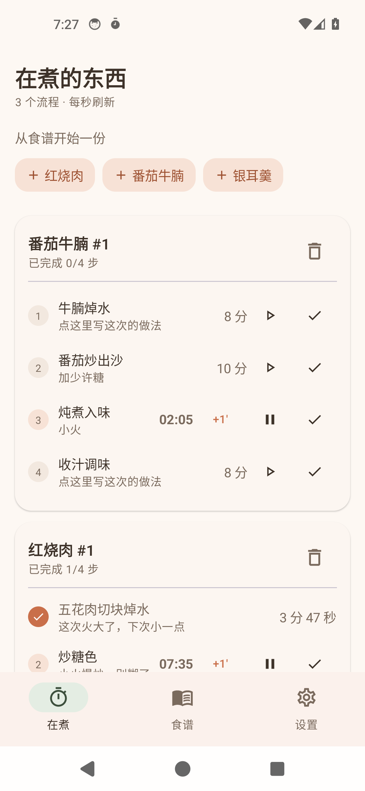
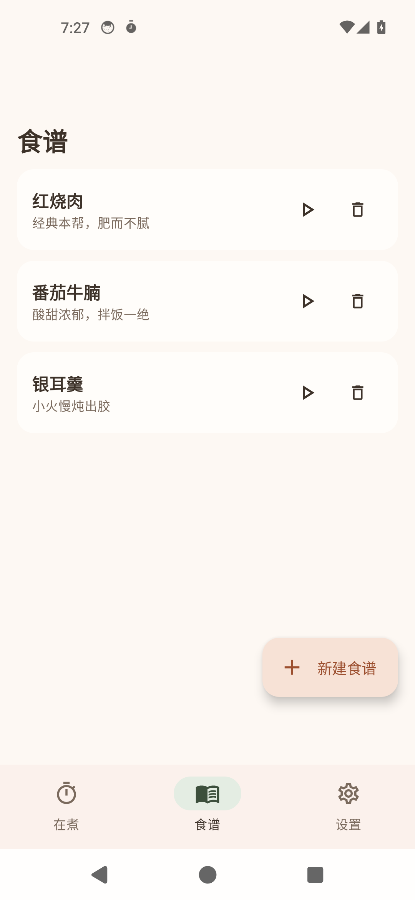
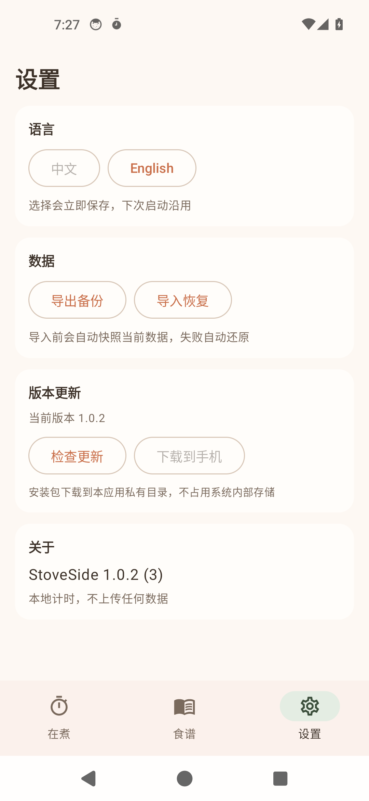

多流程并行计时
同时跑多个烹饪流程，每个步骤独立倒计时、互不阻塞，剩余时间统一呈现，到点即提醒。
不是又一个菜谱收藏夹，而是把「现在这一步还要几分钟」回答清楚。
同时跑多个烹饪流程，每个步骤独立倒计时、互不阻塞，剩余时间统一呈现，到点即提醒。
火力大小、临时换的配料、下次要改的地方，都记在对应的步骤上，不再靠脑子记。
同一份食谱可以同时开出多个烹饪实例，各自推进、各自记录，适合一次做两锅或反复试做。
把一段菜谱文本粘进来，按行与序号自动切成步骤，省掉逐条手打的功夫。
界面跟随系统语言在中文与英文之间切换，同一台手机换语言不必换应用。
数据可整体导出备份，换机重装后一键导回；新版本可在应用内直接检查并安装。
这是整个应用的核心设计：食谱模板只回答「这道菜怎么做」，每次真正下厨另开一个实例，实例里的任何改动都不会回写模板。
Recipe → Step
食谱模板与它的步骤，可被反复使用，始终保持干净。
Recipe → Cook → CookStep
每次下厨开一个 Cook 实例，步骤状态与备注记录在 CookStep 上。
Notes stay in the instance
实例备注不回写模板，模板与实例各自独立演进。
奶油底、陶土橙与鼠尾草绿，圆角克制的卡片式布局。



暖调奶油底色配陶土橙主色，深色模式沉到深陶土黑。